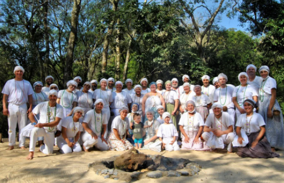

Fundamentos

O fundamento básico do nosso terreiro é tratar a todos com RESPEITO. Ter AMOR para com o próximo, e acima de tudo, ensinar com amor. Crer na força divina das entidades, ter FÉ mesmo durante os momentos mais difíceis. Acreditar que dias de alegria virão. Oferecer a mão àqueles que precisam. É ajudar e ser ajudado. É ter UNIÃO.
